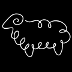

BBQ screen · temperature display
5 alternatives to the concentric-ring gauge
Your BBQ Box/probe screen currently shows a dual concentric ring (grill = outer, meat = inner) filling toward target, with a meat icon and numeric readout in the centre — recreated below on the left as reference. To its right, five different ways to show the same numbers on the round 480×480 display: a linear fill, a numeral-first minimal dial, a segmented tick ring, a split top/bottom dial, and a full-ring heat gradient with a position marker. Every option shows two states side by side — a meat-only probe, and a probe with a grill-ambient sensor added — since a grill isn't always assigned. All keep the dark theme, Montserrat type, and BBQ accent orange/green from the existing UI.
Probe 1

Meat: 24 C
0 C
73 C
BT
A vertical fill capsule reads at a glance like a physical meat thermometer; the numeral takes the space the ring used to occupy.
MEAT ONLY
PROBE 1
24
of 73°C target
The ring shrinks to a hairline accent; the number itself is the hero — readable across a patio at a glance.
Discrete ticks light up one by one instead of a smooth fill — reads more like a mechanical dial, and progress is countable rather than estimated.
Grill and meat get equal, separately-legible halves instead of nesting one ring inside another — clearer once a grill-ambient sensor is assigned alongside the meat probe.
1e
Heat-gradient ring + marker
MEAT ONLY
PROBE 1
24°C
0–73°C range
The ring itself always shows cool→hot as colour; a single marker dot shows where the current reading sits on that gradient, rather than a growing fill.
Try next: "combine 1a's numeral size with 1e's ring" · "show 1c's tick ring with the alarm-flash state" · "apply 1d to the current grill+meat dual-probe screens"